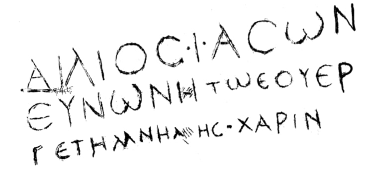

ნუხის ბერძნულწარწერიანი ფილაGreek inscription plaque of Nukha
ნუხის ბერძნულწარწერიანი ფილა
Greek inscription plaque of Nukha
შინაარსი / Summary
შეწირვითი Donating
ბიბლიოგრაფია Bibliography
კრიტიკული გამოცემა Interpretive Edition
Αἴλιος Ἰάσων Εὐνώνῃ τῷ εὐερ γέτῃ μνήμης χάριν
Αἴλιος Ἰάσων
Εὐνών ῃ τῷ εὐερ -
γέτ ῃ μνήμης χάριν
დიპლომატიური გამოცემა Diplomatic Edition
ΑΙΛΙΟΣΙΑΣΩΝΕΥΝΩΝΗΤΩΕΥΕΡΓΕΤΗΜΝΗΜΗΣΧΑΡΙΝ
ΑΙΛΙΟΣ ΙΑΣΩΝ
ΕΥΝΩΝ Η ΤΩ ΕΥΕΡ
ΓΕΤ Η ΜΝΗΜΗΣ ΧΑΡΙΝ

Building plaque from Nukha
{'ka': 'აილიოს იასონი ევნონეს ევერგეტს (კეთილისმყოფელს) სახსოვრად.', 'en': 'Ailios Iason in memory of Eunone Everget (the benefactor).'}
{'ka': 'დათარიღების საფუძველია ასოთა მოხაზულობა (მრგვალი C, კბილებიანი ω, α-სა და λ-ის წაგრძელებული ზემოთკენ მარჯვენა ბუნი) ენობრივი\n ნორმა (εου=ευ), საკუთარი სახელი (Αἴλιος = ლათ. Aelius) და მთლიანად ფორმულა (რც მთავრდება μνήμης χάριν-ით). ა. ამირანაშვილი მას II-III სს-ით ათარიღებს, უპირატესობას ანიჭებს II სს. წარწერის ასოთაგან გამოირჩევა I სტრიქონის Α და II სტრიქონის Η (თუ ორივე დაუდევარი ჩაჭრის შედეგი არ არის). ყურადღებას იქცევს Μ.\n დანარჩენი ასოები სრულიად ჩვეულებრივი მოხაზულობისაა. არ გვხვდება ქვეშმიწერილი ι-ები (ευνωνη, εουεργετη). სავარაუდოდ ნუხაში მდებარე ერთ-ერთი ნაგებობის ქვა უნდა ყოფილიყო.', 'en': 'Tinatin Kaukhchishvili: The ευ diphthong in "εουεργέτης" is represented with εου, it is common to represent ευ diphthong by ευ or εου in this period.\nI.e. in fact ευ diphthong is for ev and v and in that case we have the usage of ου and υ (and then β).\nThe shape of the letters allows us to give the date to the inscription (round C, trident shape ω, α and λ are longer on the up right base), linguistic norm (εου=ευ), personal name (Αἴλιος = lat. Aelius) and the entire formula (ending with μνήμης χάριν).\nAmiranashvili A. dates the inscription to II-III centuries, but supports the date of the II century.\nAmong the letters of the inscription A in the 1st line and H in the 2nd line are peculier (if both are done on the basis of careless carving ). Letter M is also catching our eye. Other letters are of totally regular shape . NO case of i- subscriptum (ευνωνη, εουεργετη). The plaque could be part of the monument in Nukha (Azerbaijan).'}
<div type="edition" xml:lang="ka" ana="mtavruli" xml:space="preserve">
<ab>
<lb n="1"/><w lemma="ქრისტე"><expan><abbr>ქ</abbr><ex>რისტ</ex><abbr>ე</abbr></expan></w>
<w lemma="განსუენება"><expan><abbr>გა</abbr><ex>ნ</ex><abbr>ო</abbr><ex>ჳ</ex><abbr>ს</abbr><ex>უ</ex><abbr>ენე</abbr></expan></w>
<w lemma="სულ">სოჳ<lb n="2" break="no"/>ლსა</w>
<name nymRef="ვაჩა">ვაჩაჲს<lb n="3" break="no"/>ასა</name>
<name nymRef="გურა"><expan><abbr>გო</abbr><ex>ჳ</ex><abbr>რაჲ<lb n="4" break="no"/>სასა</abbr></expan></name>
<name nymRef="მირა"><expan><abbr>მ</abbr><ex>ი</ex><abbr>რა</abbr><ex>ჲ</ex><abbr>ს</abbr><ex>ა</ex><abbr>ს</abbr><ex>ა</ex></expan></name>
</ab>
</div>